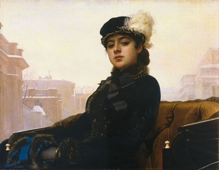

Неизвестная
"Неизвестная" — наиболее известная картина Ивана Крамского.
Девушка, героиня композиции, одета по моде 1880-х гг. Она проезжает в открытом экипаже по Аничкову мосту в Санкт-Петербурге.
Художник не оставил сведений о том, чей образ вдохновил его на эту работу.
Этот портрет часто ошибочно называют "Незнакомка" из-за одноименного стихотворения Александра Блока.
Оригинал картины хранится в Третьяковской галерее.